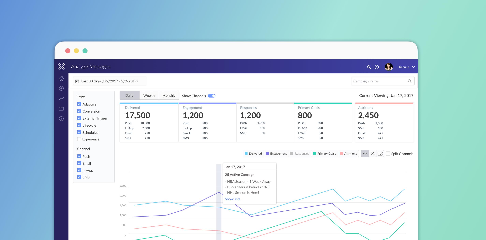
There are different purposes for a campaign manager to send out campaigns, for example, onboarding new users, driving engagement, or retaining users. After a campaign launched, marketers need to know how does the campaign performed and make sure the delivery is on the right track.
My goal is to design a campaign performance dashboard for marketers to discover insights easily.
Based on customers' feedback, the main issue of the current dashboard are 1. Confusing interaction and 2. Lack of some important KPIs' information. The diagram below illustrates the issues:
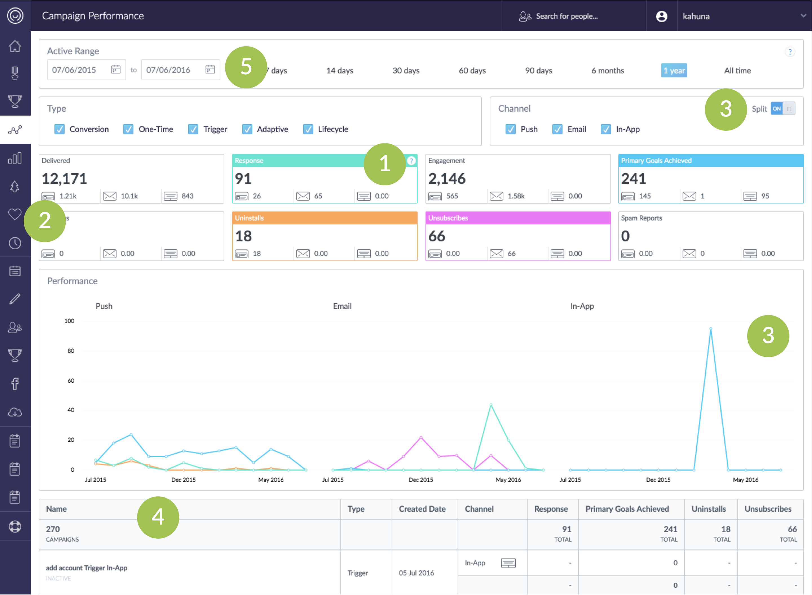
Current Campaign Performance Dashboard
“We have different goals for different campaigns, but I mostly care about the conversion rate.”- Head of Marketing Manager
To better understand what the marketers' goals of monitoring a campaign are, how they monitor the result and what are the pain points in the current workflow,, we interviewed 6 Campaign Managers and 7 Heads of Marketing.
Based on interviews, we categorize our users into two personas:
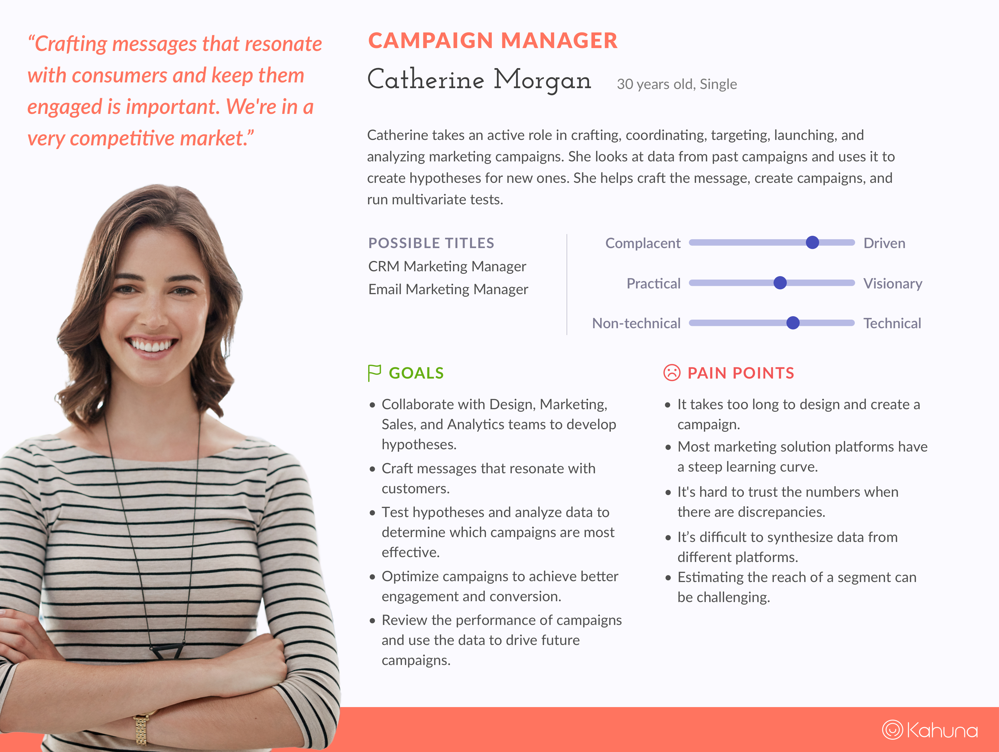
Campaign Manager
For Catherine: “Catherine takes an active role in crafting, coordinating, targeting, launching, and analyzing marketing campaigns. After a period of time, she needs to analyze the campaign results and reports to her boss. She also looks into the data from the past campaigns and uses it to create hypotheses for new ones.”
Key points to take from Catherine’s scenarios:
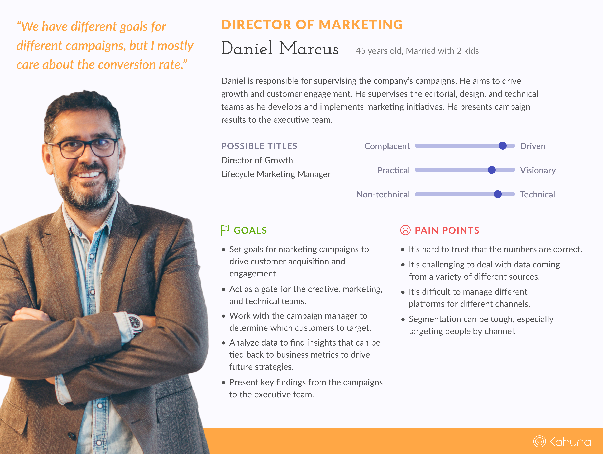
Head of Marketing
For Daniel: “Daniel sets goals for marketing campaigns to drive customer acquisition and engagement. He analyzes data to find the insights that can be tied back to business metrics to drive future strategies. He also presents key findings to the executive team.”
Key points to take from Daniel's scenarios:
At Kahuna, one of our business goals is to offer more channels in the nearly future, but the current interface doesn't handle the scalability well.
Consider the current dashboard issues, user’s workflow, and our business goals, we defined and prioritized a list of tasks we would like to improve.
According to our persona research and customer feedbacks, one of the campaign manager’s goals is to review the performance of campaigns and use the data to drive future campaigns. In our current dashboard, filter section takes too much space.
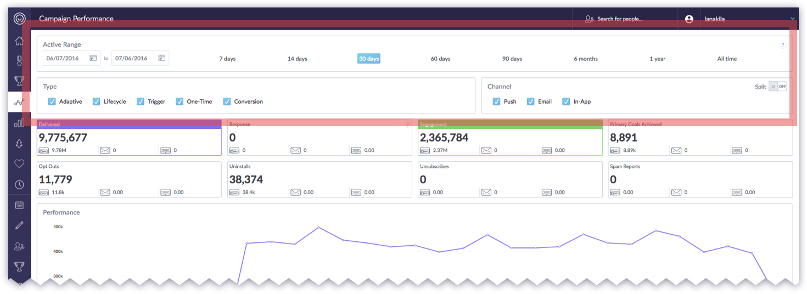
Current Screen - Take first two row displaying the filter setting.
So I came up with different ideas and shared with the team. Then collecting feedbacks from Project Managers and other folks in the design team to evaluate pros and cons of each design solution.
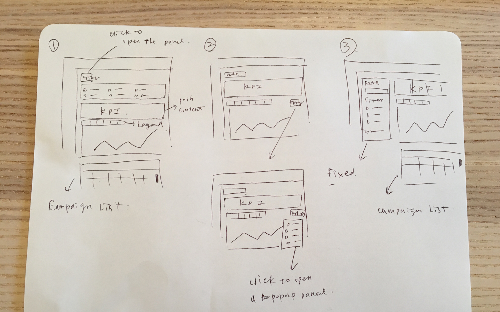
Filter Idea Sketch
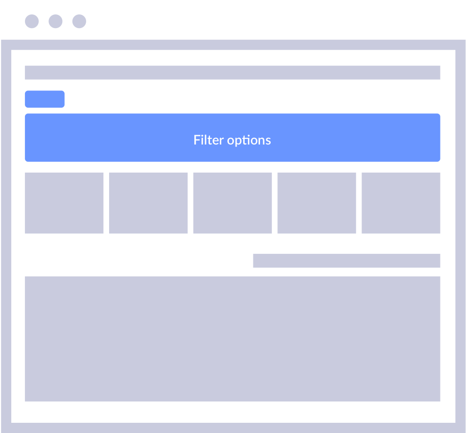
Pros:
Cons:
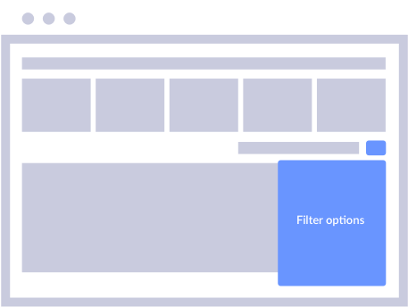
Pros:
Cons:
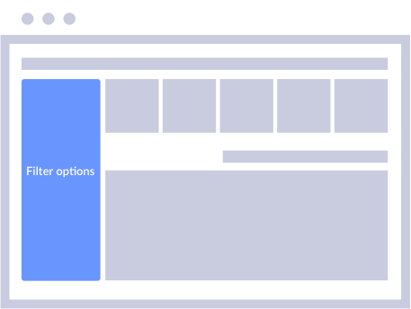
Pros:
Cons:
After the consideration, we chose the third solution. The reason is that although hiding filters can save more space, most users prefer to know what filters are selected. Hence, fixing the filter section on the side is easy for users to adjust and view the changes directly.
Togglable KPI?
When we discover the interaction across all analytics dashboard, we find that in some of the dashboards, users can click the KPI tiles to show/hide the metrics, but some of them can’t. Based on the feedbacks from our Customer Success team,When we discover the interaction across all analytics dashboard, we find that in some of the dashboards, users can click the KPI tiles to show/hide the metrics, but some of them can’t. Based on the feedback from our Customer Success team, most users didn't seem aware some KPI tiles are toggles.
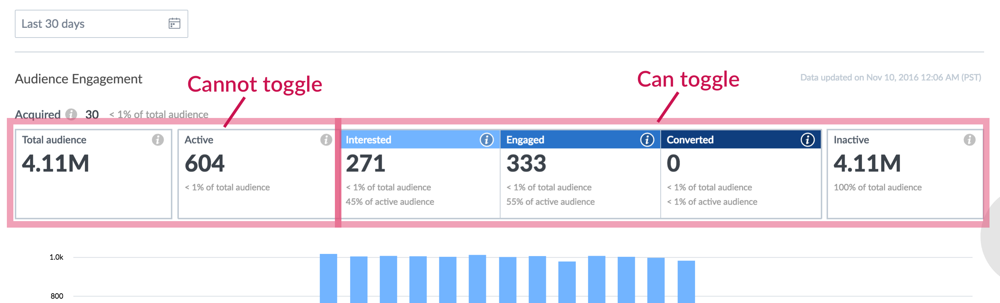
Engagement Trend KPI Tiles - not consistent of interaction behavior
How to scale?
The other issue is scalability. When we grow our channels, how to show the breakdowns of the increasing channel.
The other topic related to scalability is how many metrics we should show as KPI tiles? Eventually, we might have more than three channels, and some of the metrics only for one specific channel, such as Unsubscribe is only for email.
We go through several iterations. The final solution is only show the high-level KPIs and group the negative metrics into one bucket, call “attritions” and have a toggle on the top to show/hide the channel breakdown.
If the users want to deep dive into detail, they can go to the specific campaign to see those metrics.
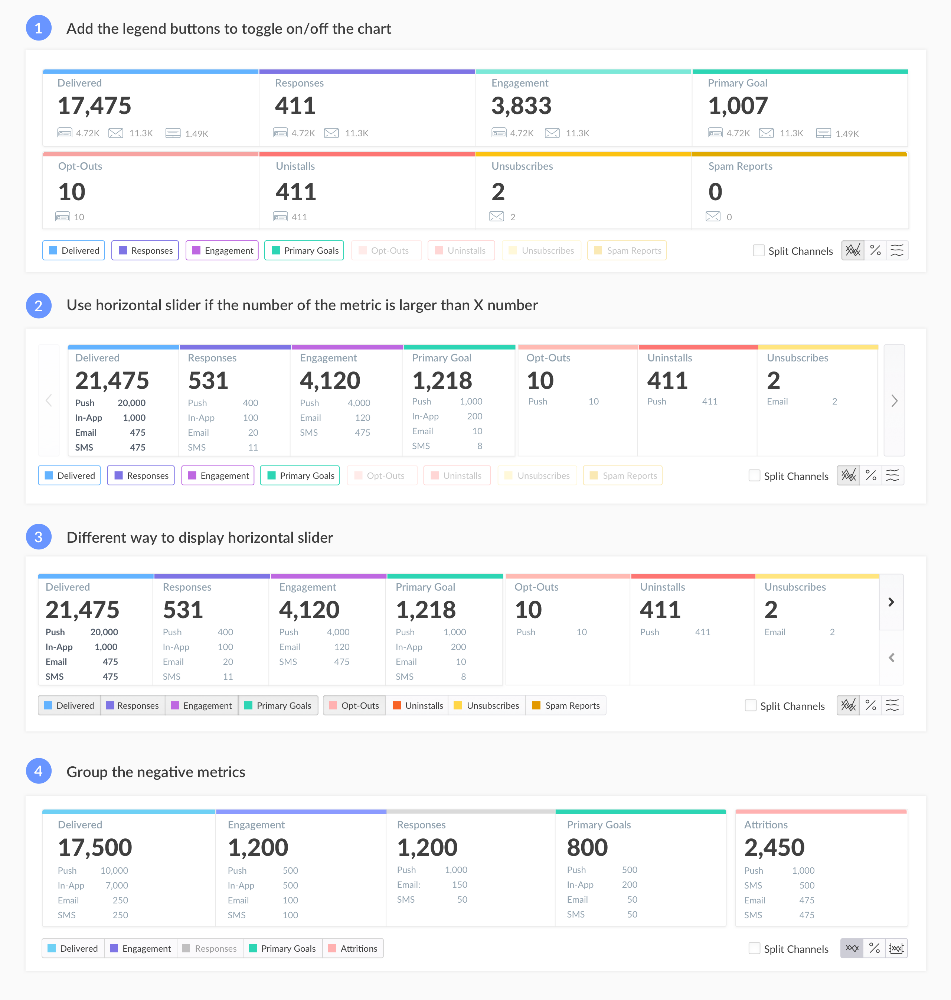
KPI tile display iteration
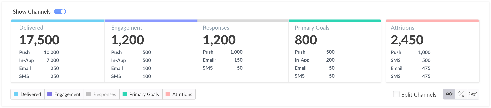
Show channel toggle
To make the design scale, I identify all reusable components. I standardize color, layout and clean up all the dashboards to make visual consistency.
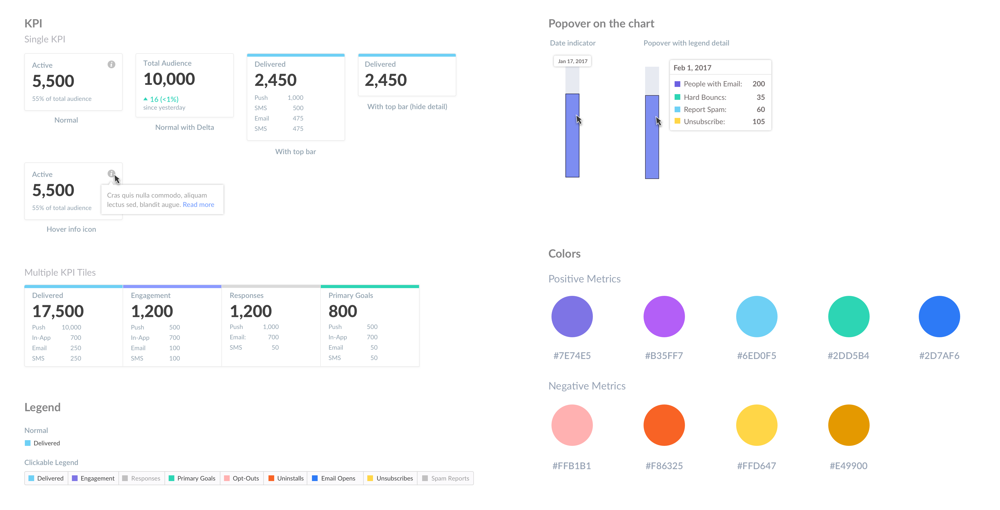
Visual Design Components
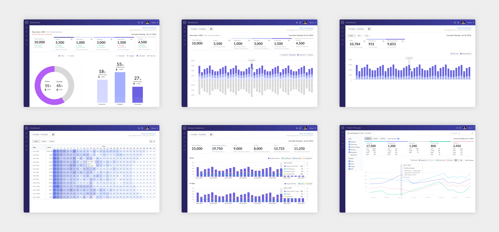
All Analytics Dashboards
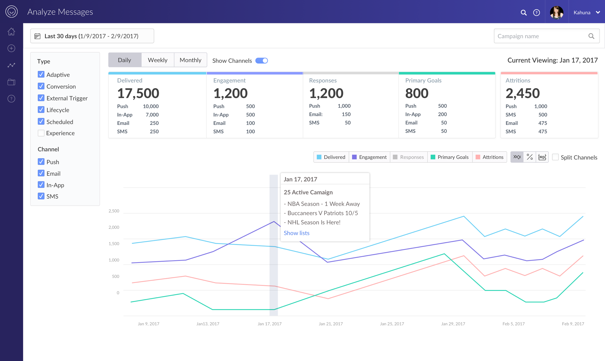
Trend View
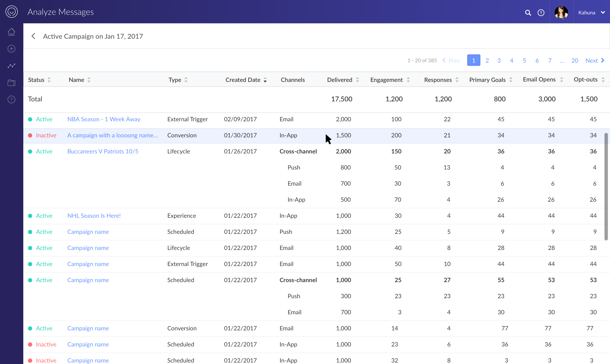
List View
Tara for leading the charge on development, David for being the best senior designer you could ask for, Justin for overseeing all aspects of the project and supporting all of us, and everyone else who played a role. Thank you.
{kind=link}
{kind=link}
{kind=link}
{kind=link}
{kind=link}
{kind=link}
{kind=link}
{kind=link}
{kind=link}
{kind=link}